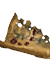

Кусок карты
Предметы / С врагов
Открыть в интерактивной вики →
| Вес | 1 |
|---|---|
| Цена | 0 |
Описание
Фрагмент карты, ведущий к  Повелитель марионеток.
Повелитель марионеток.
В диалоге при переходе в локацию босса выбрать пункт - "Я следую карте..."
Повелитель марионеток. В диалоге при переходе в локацию босса выбрать пункт - "Я следую карте..."
| Два куска карты добываются отдельно. Фрагмент карты, ведущий к Кукловоду. |
Применение
| Позволяет войти в инстансы Кукловода |
Способы получения
| Дроп — добывается при убийстве Адельвеига и Старого Адельвеига |